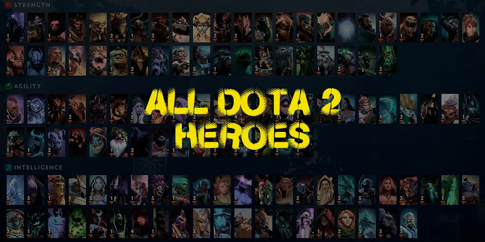

Герої за ролями
- Carry: Juggernaut, Wraith King, Luna
- Mid: Queen of Pain, Storm Spirit, Sniper
- Offlane: Axe, Mars, Tidehunter
Міні-план
- Оберіть 1 героя і зіграйте 5 матчів.
- Після кожного матчу запишіть 2 помилки.
- У наступній грі виправте одну помилку.
